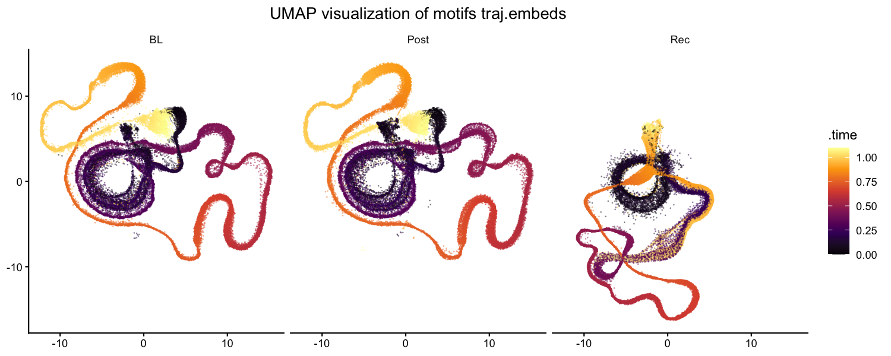
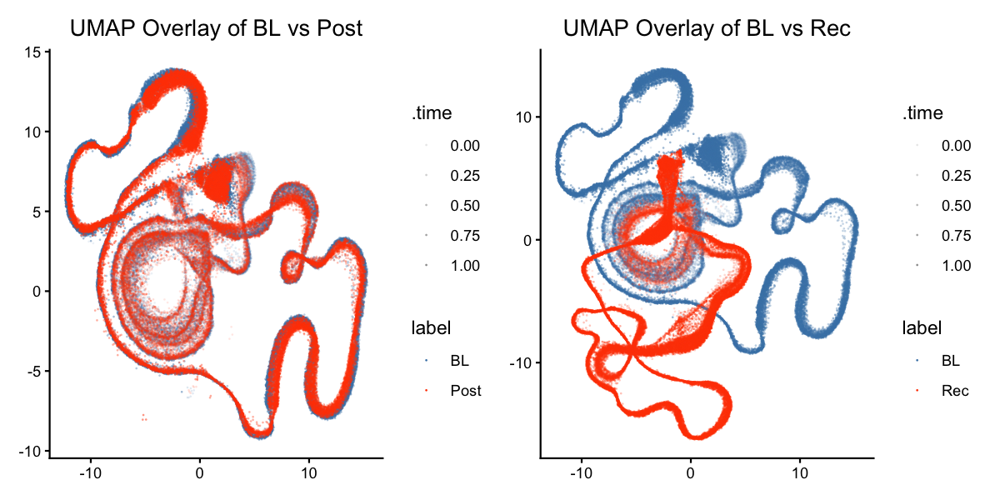

Longitudinal Motif Trajectory Analysis
Source:vignettes/longitudinal_motif_trajectory.Rmd
longitudinal_motif_trajectory.RmdIntroduction
This vignette demonstrates how to characterise how motif acoustic structure changes across developmental time by building and visualising a trajectory matrix — a compact, spectrogram-based representation of each motif — and then projecting it into a low-dimensional UMAP embedding.
Prerequisites: Before reading this vignette, we recommend completing:
- Overview: ASAP 101 — Basic ASAP functions
- Constructing a SAP Object — SAP object creation
- Longitudinal Motif Detection — Detecting motifs with template matching
What you will learn:
- How to build a trajectory matrix directly from raw WAV files using
create_trajectory_matrix() - How to reduce dimensionality with
run_pca()andrun_umap() - How to visualise and compare UMAP trajectories across developmental
stages with
plot_umap2()
Overview
A trajectory matrix is a time-resolved, spectrogram-based representation of each motif rendition. Because it sweeps sliding windows across the full motif duration, it encodes not only the individual vocal elements but also the silence gaps in between — information that single-feature summaries discard. Projecting this matrix through PCA and UMAP reveals how the complete acoustic trajectory of each motif shifts across developmental time points.
Load a previously saved SAP object
This vignette continues from Longitudinal Motif Detection. Load the SAP object saved at the end of that tutorial.
The only required component is detected motifs
(sap$motifs) — the trajectory matrix is built directly from
the raw WAV files, so prior steps like analyze_spectral(),
find_clusters(), and run_umap() are optional
to run.
sap <- readRDS("longitudinal_motif_analysis.rds")Verify that motifs are present:
Motifs: 810 rowsComplete Pipeline (copy-paste reference)
library(ASAP)
sap <- readRDS("longitudinal_motif_analysis.rds")
set.seed(222)
sap <- sap |>
create_trajectory_matrix(
data_type = "feat.embeds",
clusters = c(0, 1),
balanced = TRUE
) |>
run_pca() |>
run_umap(data_type = "traj_mat", min_dist = 0.5) |>
plot_umap2(data_type = "traj.embeds")Build the trajectory matrix
Basic usage
create_trajectory_matrix() reads each motif’s WAV file,
sweeps overlapping spectrogram windows across the full time window (from
start_time to end_time), and concatenates
those windows into a single row of the trajectory matrix. This captures
every vocal element and the silence gaps in between.
The example below also passes data_type = "feat.embeds"
and clusters = c(0, 1) to restrict the analysis to motifs
in acoustic clusters 0 and 1 (requires analyze_spectral()
and find_clusters() to have been run). If you want to
include all motifs without cluster filtering, simply omit those two
arguments:
# All motifs — no prior clustering required
sap <- create_trajectory_matrix(sap, balanced = TRUE)
set.seed(222)
# Restrict to clusters 0 and 1 (requires feat.embeds)
sap <- create_trajectory_matrix(
sap,
data_type = "feat.embeds",
clusters = c(0, 1),
balanced = TRUE
)=== Starting trajectory analysis for motifs using feat.embeds (cluster 0) ===
Filtered for clusters: 0, 1
Available labels: BL, Post, Rec
Initial data summary:
# A tibble: 3 × 3
label n mean_duration
<chr> <int> <dbl>
1 BL 206 1.2
2 Post 198 1.2
3 Rec 143 1.2
Balancing groups to 140 segments each
Final data summary:
# A tibble: 3 × 3
label n mean_duration
<chr> <int> <dbl>
1 BL 140 1.2
2 Post 140 1.2
3 Rec 140 1.2
Generating spectrograms using 7 cores...
Spectrogram generation complete!Key parameters
| Parameter | Role | Typical range |
|---|---|---|
data_type |
Set to "feat.embeds" to enable cluster filtering; omit
to use sap$motifs directly |
NULL or "feat.embeds"
|
clusters |
Integer vector of cluster IDs to include (requires
data_type = "feat.embeds") |
NULL (all) or c(0, 1)
|
balanced |
Draw equal numbers of motifs from each label |
TRUE / FALSE
|
sample_percent |
Percentage of motifs to sample per label when not balancing | 10 – 100 |
max_samples_per_label |
Maximum number of motifs to randomly sample from each label when
balanced = FALSE
|
50 – 500 |
window_size |
Duration of each sliding spectrogram window (seconds) | 0.05 – 0.2 |
step_size |
Step between consecutive windows (seconds) | 0.005 – 0.02 |
flim |
Frequency range for spectrograms (kHz) | c(1, 12) |
Control subsampling before trajectory analysis
create_trajectory_matrix() is usually the most
computationally expensive step in this workflow because it reads audio
and computes many overlapping spectrogram windows for every selected
motif. For a large longitudinal dataset, running the full motif table
can take many hours or even days. In practice, it is often better to
start with a controlled subset, confirm that the trajectory settings are
appropriate, and then scale up only if needed.
Use sample_percent when you want to keep a fixed
percentage from each label:
sap <- create_trajectory_matrix(
sap,
data_type = "feat.embeds",
clusters = c(0, 1),
sample_percent = 20
)Use max_samples_per_label when you want a direct cap on
the number of motifs processed from each label:
sap <- create_trajectory_matrix(
sap,
data_type = "feat.embeds",
clusters = c(0, 1),
max_samples_per_label = 100
)If balanced = TRUE, max_samples_per_label
is ignored because balanced sampling automatically sets the per-label
count from the smallest available group.
Tuning tips
-
Not enough motifs per label → lower
sample_percentor widen theclustersselection. -
Too much temporal smearing → adjust
window_sizeandstep_sizeto capture finer temporal details. -
Results differ across runs → always set
set.seed()before callingcreate_trajectory_matrix().
Where are the results stored?
# Trajectory matrix is in sap$features$motif$traj_mat
dim(sap$features$motif$traj_mat)[1] 420 50Reduce dimensions with PCA
run_pca() applies PCA to traj_mat using the
irlba method, which is efficient for large matrices. The
PCA scores replace the raw trajectory columns in traj_mat;
the original PCA parameters are preserved as attributes.
sap <- run_pca(sap)=== Starting PCA analysis for motifs using traj_mat (method: irlba) ===
Performing PCA using irlba method...
PCA Diagnostic Summary:
------------------------
Variance explained by first PC: 43 %
Variance explained by last PC: 0.08 %
Ratio between first and last PC: 544.22
Number of PCs needed for 80% variance: 5
RECOMMENDATION: Consider scaling before further dimension reduction because:
- First PC explains much more variance than last PC
- Scaling will help consider patterns in lower PCs
PCA score stored in traj_mat
Access via: sap$features$motif$traj_mat
- Access PCA parameters via: attributes(sap$features$motif$traj_mat)$pca_paramsInterpreting PCA diagnostics
- Variance explained by first PC >> last PC → the data has a dominant direction; scaling before UMAP will bring out subtler structure.
- Number of PCs for 80 % variance → a rough guide for how many PCs UMAP will use as input. Fewer PCs = faster UMAP but potentially less detail.
Project to UMAP
run_umap() takes the PCA scores in traj_mat
and produces a 2-D embedding stored in
sap$features$motif$traj.embeds.
sap <- run_umap(sap, data_type = "traj_mat", min_dist = 0.5)=== Starting Run UMAP for motifs using traj_mat ===
No metadata columns specified. Using all columns as features:
[1] "PC1" "PC2" "PC3" "PC4" "PC5" ... "PC50"
10:07:30 UMAP embedding parameters a = 0.583 b = 1.334
10:07:30 Read 420 rows and found 50 numeric columns
10:07:30 Scaling to zero mean and unit variance
10:07:37 Annoy recall = 100%
10:08:10 Optimization finished
UMAP completed successfully!
Access results via: sap$features$motif$traj.embeds
Access parameters via: attributes(sap$features$motif$traj.embeds)$umap_paramsKey parameters
| Parameter | Role | Typical range |
|---|---|---|
data_type |
Which feature matrix to embed | "traj_mat" |
min_dist |
Controls how tightly points cluster in UMAP space | 0.1 – 1.0 |
n_neighbors |
Balances local vs. global structure | 10 – 50 |
Tuning tips
-
All labels overlap completely → try a lower
min_dist(e.g.,0.1) or increasen_neighborsto emphasise global structure. -
Labels form tight, disconnected islands → raise
min_distor use fewer PCs as input. -
Run-to-run variability → set
set.seed()beforerun_umap()for reproducible embeddings.
Visualise the trajectory UMAP
plot_umap2() renders the UMAP embedding coloured by
developmental label, making it easy to see how motif acoustic
trajectories shift across stages.
Coloured by label
plot_umap2(sap, data_type = "traj.embeds")
UMAP of motif trajectory embeddings coloured by developmental label (BL, Post, Rec). Each point is one motif; spatial proximity indicates acoustic similarity across the full motif trajectory.
Overlay mode — comparing a stage to baseline
overlay_mode = TRUE highlights a target label against
the baseline (base_label), making developmental shifts more
salient:
trajectory_embeds <- sap$features$motif$traj.embeds
plot_umap2(
trajectory_embeds,
overlay_mode = TRUE,
base_label = "BL"
)
Overlay UMAP: each comparison label (Post, Rec) is shown individually against the baseline (BL) distribution. Shifts away from the baseline cloud indicate developmental change.
Interpreting the UMAP
- Large overlap between BL and Post → acoustic trajectory structure is largely preserved across these two stages; motifs occupy similar UMAP regions.
- BL and Rec occupy different regions → the recovery stage shows a clear shift in overall acoustic trajectory, indicating meaningful change in motif structure relative to baseline.
- Post and Rec diverge → trajectory structure continues to change through recovery, suggesting an ongoing developmental process rather than a simple return to the pre-perturbation state.
- Spread within a label → wide scatter for a given label reflects within-stage variability in motif acoustic structure; tighter clouds indicate more stereotyped renditions.
Save the SAP object
saveRDS(sap, "longitudinal_motif_trajectory.rds")
# Reload later with:
sap <- readRDS("longitudinal_motif_trajectory.rds")What gets saved: - Everything from previous pipeline
steps - Trajectory matrix: sap$features$motif$traj_mat -
Trajectory UMAP embeddings:
sap$features$motif$traj.embeds
Session info
sessionInfo()
#> R version 4.6.0 (2026-04-24)
#> Platform: x86_64-pc-linux-gnu
#> Running under: Ubuntu 24.04.4 LTS
#>
#> Matrix products: default
#> BLAS: /usr/lib/x86_64-linux-gnu/openblas-pthread/libblas.so.3
#> LAPACK: /usr/lib/x86_64-linux-gnu/openblas-pthread/libopenblasp-r0.3.26.so; LAPACK version 3.12.0
#>
#> locale:
#> [1] LC_CTYPE=C.UTF-8 LC_NUMERIC=C LC_TIME=C.UTF-8
#> [4] LC_COLLATE=C.UTF-8 LC_MONETARY=C.UTF-8 LC_MESSAGES=C.UTF-8
#> [7] LC_PAPER=C.UTF-8 LC_NAME=C LC_ADDRESS=C
#> [10] LC_TELEPHONE=C LC_MEASUREMENT=C.UTF-8 LC_IDENTIFICATION=C
#>
#> time zone: UTC
#> tzcode source: system (glibc)
#>
#> attached base packages:
#> [1] stats graphics grDevices utils datasets methods base
#>
#> loaded via a namespace (and not attached):
#> [1] digest_0.6.39 desc_1.4.3 R6_2.6.1 fastmap_1.2.0
#> [5] xfun_0.58 cachem_1.1.0 knitr_1.51 htmltools_0.5.9
#> [9] rmarkdown_2.31 lifecycle_1.0.5 cli_3.6.6 sass_0.4.10
#> [13] pkgdown_2.2.0 textshaping_1.0.5 jquerylib_0.1.4 systemfonts_1.3.2
#> [17] compiler_4.6.0 tools_4.6.0 ragg_1.5.2 bslib_0.11.0
#> [21] evaluate_1.0.5 yaml_2.3.12 otel_0.2.0 jsonlite_2.0.0
#> [25] rlang_1.2.0 fs_2.1.0